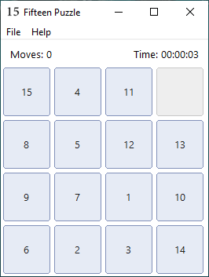

The sliding-number puzzle appears
The 15-puzzle—also sold under names such as the Boss Puzzle—was invented in the United States in the 1870s. Its rules were instantly understandable: fifteen numbered pieces, one empty square, and only sliding moves.
C · Win32 API · Visual C++ 2010
A lightweight native implementation of the 15-puzzle with solvable shuffles, undo and redo, save and load, pause, restart, a move counter, and an elapsed-time clock.
This is also a study project: one heavily commented source file shows how a traditional Win32 desktop program creates its window, menus and controls, handles messages, draws its own tiles, and preserves game state without a framework or game engine.

A short history
The 15-puzzle—also sold under names such as the Boss Puzzle—was invented in the United States in the 1870s. Its rules were instantly understandable: fifteen numbered pieces, one empty square, and only sliding moves.
The puzzle became a major popular phenomenon in the United States and quickly spread to Europe and beyond. It also attracted mathematicians because some arrangements that look almost solved are actually unreachable.
The same small rule set makes an excellent software project: it needs a model, input handling, layout, drawing, timing, persistence, history, randomization, and a correctness rule for generated boards.
Historical summary based on the ETH Library history and the Mathematical Association of America.
The complete game loop
The Windows edition goes beyond a minimal tile demo. It maintains a complete game state and gives the player the conveniences expected from a real desktop application.
A random arrangement is checked using inversion parity and the blank row. Impossible boards are rejected before a game begins.
Each history entry stores a full snapshot: tiles, blank position, move count, elapsed time, paused state, and solved state.
Quick commands use game.15; Save As and Load From use the standard Windows file dialogs for choosing another path.
Restart returns to the initial shuffled board. New Game produces another verified arrangement with a new seed.
The numbered buttons are drawn by the application, demonstrating WM_DRAWITEM and giving the board a controlled, consistent appearance.
A Win32 timer updates elapsed time while play is active. Pause freezes the clock and becomes part of the saved state.
Why random is not enough
Sliding a tile does not allow arbitrary permutations. For a 4 × 4 board, solvability depends on two properties: the inversion count of the numbered tiles and the blank square's row counted from the bottom.
The generator keeps shuffling until those properties have the required parity. This avoids presenting the player with a board that can never reach the ordered state.
Board width: even
Check: inversions + blank row
Result: accept only a reachable state
The famous “14–15 swapped” position is the classic example of an impossible arrangement.Code walkthrough
wWinMainRegisters the window class, creates the main window, and runs the standard message loop.
WM_CREATEBuilds menus, labels, tile buttons and fonts, starts the timer, and creates the first puzzle.
WM_SIZERecalculates the board geometry so controls stay aligned with the client area.
WM_COMMANDRoutes menu actions, keyboard accelerators, and tile clicks to the game logic.
WM_TIMERAdvances and redraws the elapsed-time display while the game is running.
WM_DRAWITEMPaints numbered tiles and status elements instead of relying on default button rendering.
fifteen-puzzle-win/
├── fifteen-puzzle.c main program
├── res.rc menus & resources
├── resource.h command IDs
├── app.manifest Windows metadata
├── icon1.ico application icon
├── bin/
│ └── fifteen-puzzle-win.exe
└── screenshots/
└── fifteen-puzzle.pngCompact persistence
Every tile value is between 0 and 15, so it fits in four bits. Two tile values are packed into each byte; one 16-tile board therefore needs only eight bytes.
The save file stores both the current board and the original shuffled board, along with the random seed, move count, elapsed time, and state flags. That is enough to continue playing or restart the exact same puzzle.
Build and study
Open fifteen-puzzle-win.sln, select the Win32 Release configuration, and build. The repository contains no framework dependency; it uses the Windows SDK and standard C runtime available with Visual C++ 2010.
The public executable was rebuilt from the published source before release.
Ready to play or inspect
The release archive contains the Win32 program, Visual C++ project, commented C source, resources, screenshot, README, and MIT license.